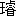

大阪の画工
北の著はせる
古今実物語と云ふ書あり。前後四巻、作者の筆に成れる
 画
画を
交ふ。格別
稀覯書にはあらざれども、
聊か
風変りの
趣あれば、そのあらましを紹介すべし。
古今実物語は奇談二十一篇を収む。その又奇談は怪談めきたれども、実は少しも怪談ならず。たとへば「幽霊
二月堂の
牛王をおそるる事」を見よ。
「
今西村に
兵右衛門と云へる
有徳なる百姓ありけるが、かの家にめし使ふ女、みめかたち人にすぐれ、心ざまもやさしかりければ、
主の兵右衛門おりおり
忍びかよひける。此主が女房、
妬ふかき者なるが、此事をもれ聞きて
瞋恚のほむらに胸をこがし、
奴をひそかにまねき、『かの女を殺すべし、よく
仕了せなば金銀あまたとらすべし』と云ひければ、この男も驚きしが、元来慾心ふかき者なれば、心安く
受合ひける。（中略）
下女（中略）
何心なくあぜづたひに
行く向うの
方、すすきのかげより思ひがけなく、
下男横だきにして
池中へなげ入れける。（中略）
「日も
西山にかたむき、折ふししよぼ／＼雨のふるをいとはず、
夜歩きをたのしみにうでこきする男、
曾我宮へ
日参。
此所を通りけるに、池の中より『もしもし』と呼びかくる。誰ならんと立ちどまれば、いぜんの女池の中よりによつと出で、『男と見かけ頼み申し度き事あり』と云はせもはてず、
狐狸のしわざか、人にこそより目にもの見せんと腕まくりして立ちかかれば、『いやいやさやうの者にあらず。我は
今西村の
兵右衛門に奉公致すものなるが、しかじかのことにてむなしく成る。あまりになさけなきしかたゆへ、
怨みをなさんと一念此身をはなれず
今宵かの家にゆかんと思へど
主つねづね観音を信じ、
門戸に
二月堂の
牛王を押し置きけるゆゑ、
死霊の近づくことかなはず（中略）牛王をとりのけたまはらば、
生々世々御恩』と、世にくるしげにたのみける。
「かのもの
不敵のものなれば（中略）そのところををしへたまへ。のぞみをかなへまゐらせんと、あとにつきていそぎゆく。ほどなく兵右衛門が宅になれば、女の
指図にまかせ、何かはしらず守り札ひきまくり捨てければ、女はよろこび戸をひらき、家へ入るよと見えしが
臥してゐたる女房ののどにくひつき、難なくいのちをとりて、おもてをさして逃げ出でける。（中略）
「女走りいでゝ（中略）此上ながらとてものことにいづくへなりと連れてゆきたまはれと、背につきはなれぬうち、
家内にわかにさわぎ立ち、やれ何者のしわざなるぞ、
提灯松明と、上を下へとかへすにぞ、以前の男も心ならず足にまかせて逃げゆきしが、思はずもわが家にかへり、（中略）ひとり住みの身なれば、誰れとがむるものもなけれど、幽霊を連れかへりそゞろに気味わるく、『のふ／＼のぞみはかなひし上は、いづかたへもゆきたまへ、（中略）』と、心のうちに念仏をとなへけるこそをかしけれ。
「幽霊もしばしはさしうつむきてゐたりしが、（中略）
怨めしと思ふかたきをかみころし、一念散ずるときは
泉下へもゆくべきに、いまだ
此土にとどまることのふしんさよと心をつけて見るに、さして常にかはることもなし。（中略）それより一つ二つとはなし合ふに、いよ／＼幽霊にあらざるにきはまりける。（中略）男も定まる妻もなければと、つひ
談合なりてそこを立ちのき、大阪にしるべありてひきこしける。
兵右衛門がかたにはかゝることゝは露しらず、本妻と
下女が
修羅の
苦患をたすけんと
御出家がたの
金儲けとなりけるとなり。」
この話は珍しき話にあらず。
鈴木正三の同一の怪談を発見し得べし。唯
北はこの話に現実主義的なる解釈を加へ、超自然を自然に
翻訳したり。そはこの話に
止らず、
安珍清姫の話を翻訳したる「
紀州日高の女
山伏を殺す事」も然り、
葛の
葉の話を翻訳したる、「畜類人と
契り
男子を生む事」も然り。
鉄輪の話を翻訳したる「
妬女貴布禰明神に祈る事」も然り。殊に最後の一篇は嫉妬の
鬼にならんと欲せる女、「こは
有がたきおつげかな。わが
願成就とよろこび、其まま川へとび入りける」も、「ころしも
霜月下旬の事なれば、（中略）
四方は白たへの雪にうづみ、川風はげしくして、
身体氷にとぢければ、手足もこごへ、すでに
息絶へんとせし時、」いつしか
妬心を忘れしと云ふ、誰かこの
残酷なる現実主義者の
諧謔に失笑一番せざるものあらん。
更に又「孝子
黄金の釜を掘り出し娘の事」を見よ。
「
三八といへる百姓は
一人の母につかへて、至孝ならぶものなかりける。
或年の
霜月下旬の頃、母
筍を
食し
度由のぞみける。もとより貧しき身なれども、母の好みにまかせ、
朝夕の食事をととのへすすむといへ共この
筍はこまりはてけるが、（中略）
蓑笠ひきかづき、二三丁ほど
有所の、藪を
心当に
行ける。積る
朽葉につもる雪、かきのけ／＼さがせども、（中略）ああ天我をほろぼすかと
泪と雪に
袖をぬらし、
是非なく／＼も帰る道筋、
縄からげの
小桶壱つ、何ならんと取上げ見れば、孝子三八に
賜ると書付はなけれ共、まづ
蓋をひらけば、内よりによつと塩竹の子、
金もらうたよりうれしく、（中略）女房にかくとしらすれば、同じ心の
姑思ひ、手ばやに塩だし
鰹かき、即時に
羹となしてあたへける。其味
生なるにかはる事なく、母もよろこび
大方ならず、いか
成人のここに落せしや、是又
壱つのふしぎ也。
「しかるにかほど孝心厚き者なれ共、

げばかせぐほど貧しく成り、次第／＼に家をとろへ、今は
朝夕のけぶりさへたえ／″＼に成りければ、
三八女房に云ふやう、（中略）ふたりが中にまうけし娘ことし十五まで育てぬれ共、（中略）かれを都の
方へつれ行き、
勤奉公とやらんをさせ、
給銀にて
一して見んと思ふはいかにと尋ぬるにぞ、わらはも
疾くよりさやうには思ひ
候へ共、（中略）と答へける。（中略）三八は身ごしらへして、娘うちつれ出でにける。名にしおふ
難波の
大湊、
先此所へと心ざし、少しのしるべをたずね、それより茶屋奉公にいだしける。（中略）
扨此娘、（中略）つとめに
出る其日より、富豪の大臣かかり、
早速に身うけして、三八夫婦母おやも大阪へ引きとり、有りしにかはる
暮と成り、三八夏は
蚊帳の代りにせし身を
腰元共に
床を
扇がせ、女房は又
姑にあたへし
乳房を
虎屋が
羊羹にしかへ、氷から
鯉も古めかしと、水晶の
水舟に朝鮮金魚を泳がせて楽しみ、
是至孝のいたす所なり。」
天は孝子に幸福を与へず。孝子に幸福を与へしものは
何人かの遺失せる塩竹の子のみ。或は身を売れる
一人娘のみ。作者の俗言を冷笑するも
亦悪辣を
極めたりと云ふべし。
予はこの皮肉なる現実主義に多少の同情を有するものなり。唯唯作者の論理的
頭脳は残念にも余り
雋鋭ならず。「
餓鬼聖霊会を論ずる事」の如き、「寺僧病人問答の事」の如き、或は又「仏者と儒者
渡唐天神を論ずる事」の如き、論理の筆を
弄したるものは
如何に
贔屓眼に見るにせよ、
概ね
床屋の親方の人生観を講釈すると五十歩百歩の
間にあるが如し。
因に云ふ。「
古今実物語」は
宝暦二年正月出板、
土冏然の漢文の序あり。
書肆は大阪南本町一丁目
村井喜太郎、「古今百物語」、「当世百物語」号と同年の出版なりしも一興ならん
乎。
「
魂胆色遊懐男」はかの「
豆男江戸見物」のプロトタイプなり。予の家に蔵するは巻一、巻四の二冊なれども、
大豆右衛門の冒険にはラブレエを想はしむるものなきにあらず。
大豆右衛門は
洛東山科の人なり。その母「塩の
長次にはあらねど、夢中に馬を呑むと見て、懐胎したる子なるゆへ」大豆右衛門と称せしと云へば、この名の
由つて来る所は
必しも多言するを要せざるべし。大豆右衛門、二十三歳の時、「さねかづら取りて京の歴々の女中方へ売べしと
逢坂山にわけ登り」しが、
偶玉貌の
仙女と逢ひ、
一粒の
金丹を服するを得たり。「ありがたくおし頂きてのむに、忽ち其身雪霜の消ゆる如くみぢみぢとなつて、
芥子人形の如くになれり。」こは人倫の
交りを不可能ならしむるに似たれども、仙女の説明する所によれば、「
色里にても又は町家の歴々の奥がたにても、心のままにあはれるなり。（中略）
汝があふて
見度と思ふ女のねんごろにする男の
懐の中に入れば、その男の魂ぬけ
出、汝
仮に其男に入れかはりて、相手の女を自由にする事、又なき楽しみにあらずや」と云へば、
頗る便利なる
転身と云ふべし。
爾来大豆右衛門、色を天下に
漁すと雖も、
迷宮に似たる人生は容易に幸福を与ふるものにあらず。たとへば巻一の「
姉の異見
耳痛樫木枕」を見よ。
「台所より飛びあがり、奥の方を心がけ、
襖のすこし
明きたるあひよりそつと
下りて大座敷へ
出、（中略）
唐更紗の
暖簾あげて、
長四畳の
間を過ぎ、一だんたかき小座敷あつて、
有明の火明らかに、
是ぞ
此家の
旦那殿の
寝所ならめと腰障子をすこしつきやぶりて、是より入つて見れば夫婦枕をならべて、前後も知らず連れ
節の
鼾に、（中略）
先内儀の顔をさし
覗いて見れば、
其美しさ
此器量で三十ばかりに見ゆれば、卅五六でもあるべし。（中略）男は三十一二に見えて、
成程強さうな生れつき。
扨は此女房の美しいに思ひつきて、我より二つ四つも年のいたをもたれしか、
但入り
聟か、（中略）と
亭主が
懐にはいればそのまま
魂入れ替り、（中略）さあ夢さましてもてなしやと云へば、此女房目をさまし、
肝のつぶれた顔して、あたりへ我をつきのけ、起きかへつて、コレ気ちがひ、
爰を内ぢやと思ひやるか、
夜の
更けぬ先に
往にや／＼と云ふに、面白うもない
歌留多をうつてゐて
夜を
更かし、今からは
往なれまい、
旦那殿も
大津祭に
行かれて
留守ぢやほどに、泊つてなりと行きやと、兄弟の
忝けなさは
何の遠慮もなく一所に寝るを、
姉をとらまへ
軽忽な、こりや畜生の
行儀か。こちや畜生になる事は
厭ぢやいの。（中略）
多聞悪いと畳を叩いて腹を立てる。
扨は
南無さん姉ぢやさうな。是は
粗相千万、（中略）と
後先揃はぬ事を云ふて、又
本の
夜着へこそこそはいつて、寝るより早く
其処を立ち
退き、（
下略）」（この項未完）
（大正十三年六月）